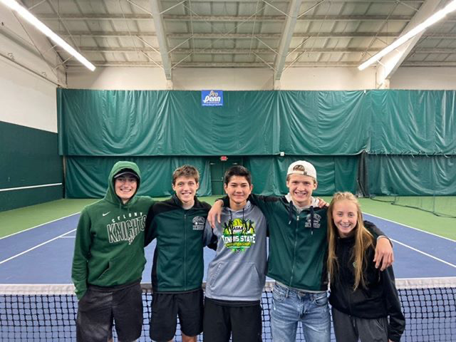
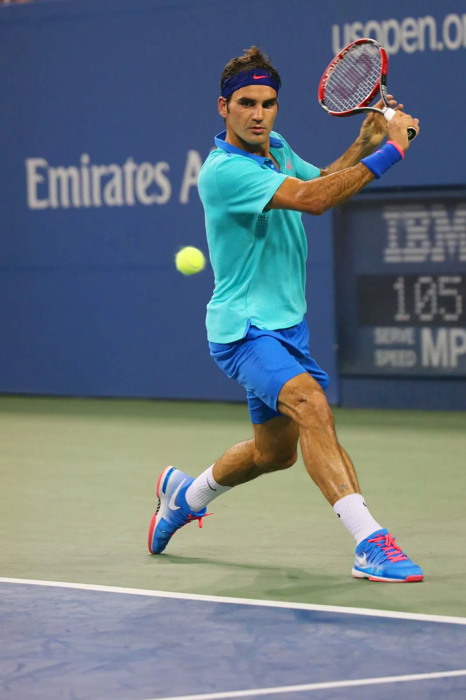
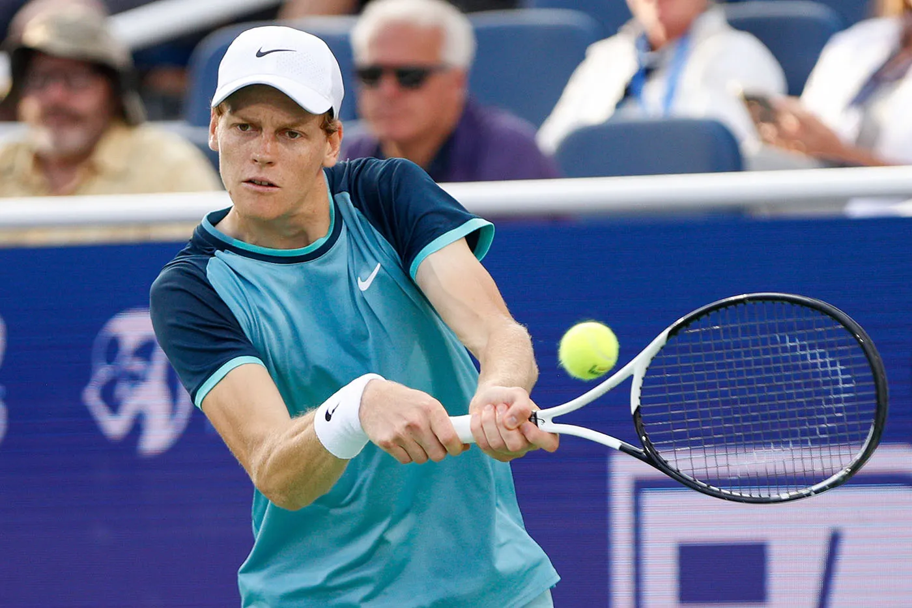
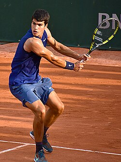

ATP Top 10 Rankings (1973–2016)

Hi, I'm Grant and I love tennis! I started playing tennis when I was 12 years old and have been hooked ever since. Tennis is a great way to stay active and have fun with friends and family. I made it all the way to the Alaska state championship in high school and have continued to play for fun now that I'm in college. I love watching tennis and am always excited to see the talents across generations clash on the court.



